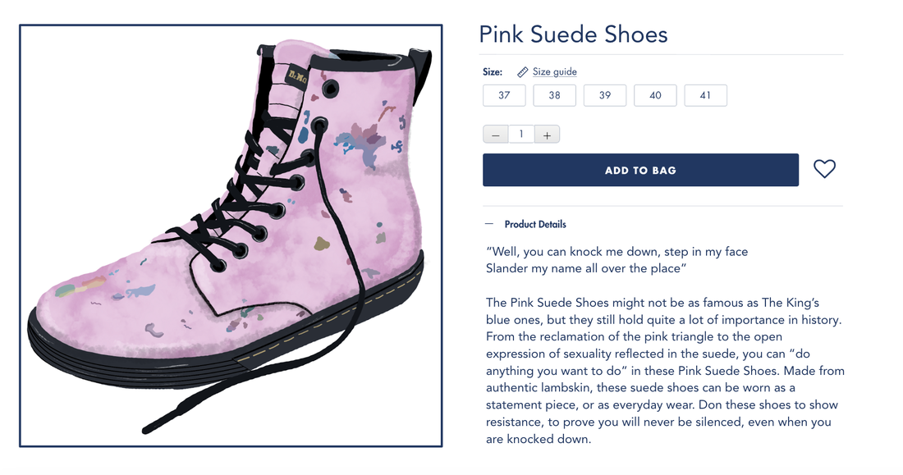
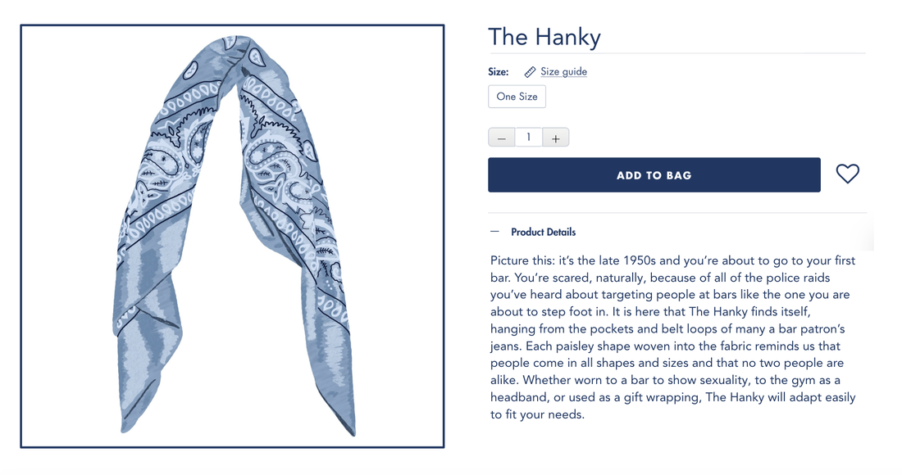
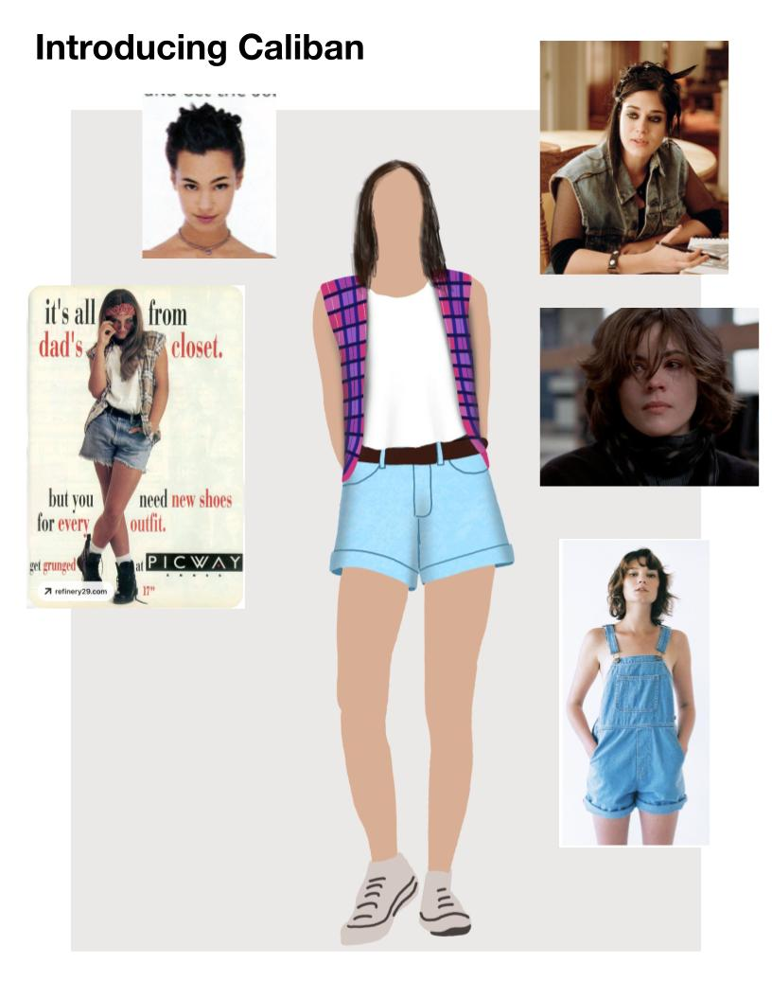
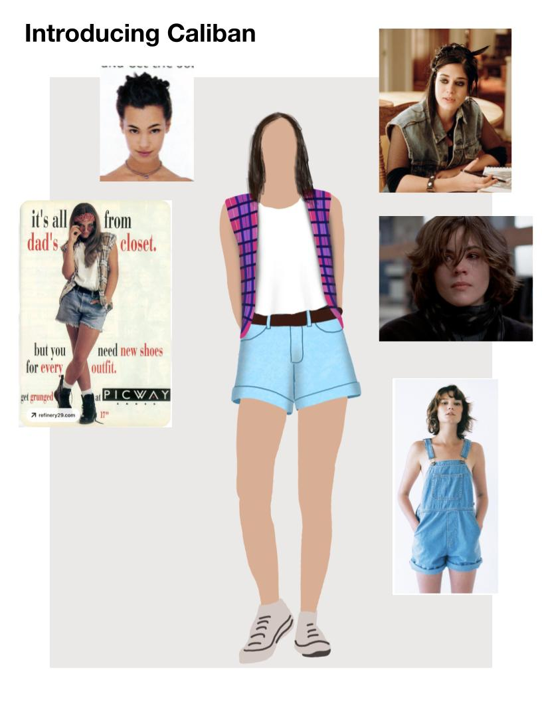

Costumes
J. Peterman Project
In my Costumes 1 Class we were tasked with finding two items of clothing from our wardrobe that represented an example of clothing as protest. We then had to render them in the style of J. Peterman drawings and write a description similar to those on the J. Peterman website.
 Almost Fairy Time
This play is about four women who are not treated properly by their boss. It feels very relevant because women do not often have many spaces of trust or a community and culture that believe them when they speak out. Therefore, a visual solution will be to set the story in a place where women create their own safe space away from their boss - at an American Apparel store in California.
 

Museum Inspiration Project
In my Costumes 1 class, we went to a museum and were tasked with taking pictures of things that we found interesting, taking note of any repeated patterns we found in nature. I was very interested in the dots/lines pattern that was on the starfish, and how that also looked like neurons on the microscopic scale. I used this pattern as my inspiration for my rendering.
Tailoring
Half-Scale Suit Jacket

Collar Dickie
Scenic Paint
Scenic Paint Final

Painted Drape Sample